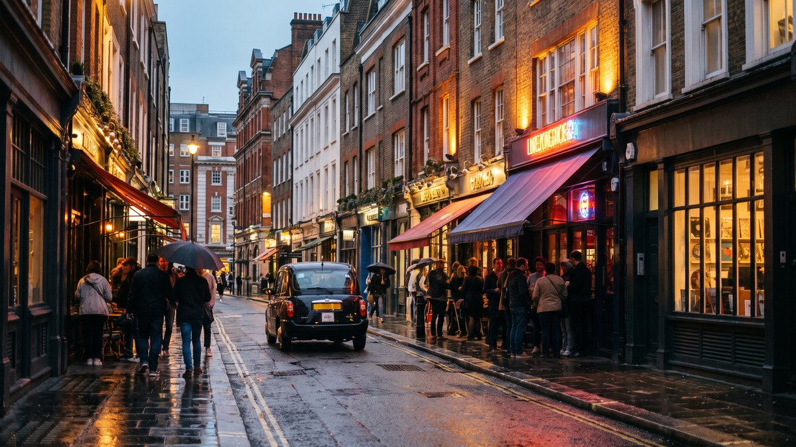

עודכן לאחרונה ב-2 באוקטובר 2026. שעות הפתיחה, ימי השוק והמחירים נבדקו מול האתרים הרשמיים באותו יום
סוהו היא לא אטרקציה, היא מצב רוח. אין כאן כרטיס גדול, אין תור, ואין מקום אחד שבגללו באים. יש רשת של רחובות קטנים שבכל אחד מהם קורה משהו אחר, ובצד הדרומי שלהם, מעבר לרחוב אחד, השכונה הסינית הקומפקטית ביותר באירופה. המדריך הזה בנוי על כלל אחד: מגיעים אחר הצהריים, הולכים מצפון לדרום, ומסיימים בארוחת ערב בצ׳יינה טאון. בבוקר מוקדם רוב מה שמעניין כאן עדיין סגור.
בחרו כיוון ותראו כאן את המקומות עצמם, עם מה שכדאי לדעת לפני שהולכים.
מה זה סוהו וצ׳יינה טאון, ולמה מגיעים אחר הצהריים

סוהו היא הריבוע שבין אוקספורד סטריט בצפון, ריג׳נט סטריט במערב, שאפטסברי אווניו בדרום וצ׳רינג קרוס רואד במזרח. שדה ציד מלכותי במאה השש עשרה, ואחר כך שכונת מהגרים: הוגנוטים צרפתים, איטלקים, יהודים, ובמאה העשרים השכונה של המוזיקה, הקולנוע, הסצנה הגאה והלילה של לונדון. היום זה המקום שבו עובדי התעשייה היצירתית של העיר אוכלים צהריים ושותים בערב, ורוב הרחובות צרים מדי למכוניות. צ׳יינה טאון היא השורה הדרומית: הקהילה הסינית עברה לכאן מהדוקלנדס אחרי מלחמת העולם השנייה, וג׳רארד סטריט, רחוב אחד עם שערים אדומים בשני קצותיו, הפך למרכז שלה.
מה שזה אומר לכם בפועל: אין כאן יום של אטרקציות, יש הליכה של שניים עד שלושה קילומטרים מצפון לדרום, מאאוטרנט בפינת צ׳רינג קרוס רואד, דרך הכיכרות והשוק, מערבה לקרנבי, ובחזרה דרומה לצ׳יינה טאון. בבוקר הרחובות האלה ריקים: החנויות נפתחות באיחור, השוק עוד מסתדר, והברים סגורים. באחר הצהריים של יום חול הכל פתוח, ובערב השכונה נראית כמו שהיא אמורה להיראות. לכן ההמלצה: להגיע בסביבות שתיים או שלוש, ולסיים בארוחת ערב.
למי האזור הזה מתאים, ולמי פחות
דים סאם, ברווז צלוי בחלון, מאפיות הונג קונגיות, בועות תה, וקומה שלמה של מסעדות בקינגלי קורט. הצפיפות הגבוהה ביותר של מקומות לאכול בעיר.
ליברטי, קרנבי, חנויות תקליטים, בוטיקים קטנים ומותגים שאין בקניון. לא זול, אבל גם לא עוד רשת.
הפנסים האדומים של ג׳רארד סטריט, השער, הניאון של הברים, המסכים של אאוטרנט, וגלריית צילום של ממש. הכי טוב בשעת הדמדומים.
ארוחת ערב, בר, ומופע ווסט אנד במרחק חמש דקות. זה האזור של הערב, ולכן גם היום שמסיימים בו את הטיול.
ולמי זה פחות מתאים. מי שמחפש אטרקציה גדולה, מוזיאון או ארמון לא ימצא אותם כאן, וזה גם לא המקום לבוקר, כי בעשר הרחובות עוד ישנים. מי שרוצה שקט יתעייף מהצפיפות של ערב שישי. ומשפחות עם ילדים קטנים עושות את סוהו באחר הצהריים ואת צ׳יינה טאון בארוחת ערב מוקדמת, ולא נשארות בסוהו אחרי תשע, כשהרחובות הופכים לרחובות של ברים ושל קהל מבוגר.
📅 מה פתוח מתי, לפני שבונים את הערב
הטבלה נכונה ל-2 באוקטובר 2026 לפי האתרים הרשמיים, וכמו תמיד בודקים לפני שיוצאים, כי שעות של חנויות ומסעדות משתנות.
| מקום | מתי | מה חשוב | עלות |
|---|---|---|---|
| אאוטרנט, המסכים | כל יום מעשר בבוקר עד הלילה | התוכן על המסכים מתחלף, ובודקים באפליקציה מה מוצג היום | חינם |
| כיכר סוהו וגולדן סקוור | שעות האור | גנים ציבוריים, ספסלים, ובצהריים עובדי השכונה | חינם |
| שוק ברוויק סטריט | שני עד שבת, 8:00 עד 18:00 לפי המועצה, בפועל הכי חי בצהריים | ראשון סגור, ומספר הדוכנים משתנה מיום ליום | חינם |
| גלריית הצילום | שני עד רביעי ושבת 10:30 עד 18:00, חמישי ושישי עד 20:00, ראשון 11:00 עד 18:00 | האולמות סגורים עד 13.10.2026, הבניין סגור ב-11.10. בית הקפה, החנות והגלריה למכירה פתוחים | בתשלום |
| ליברטי | שני עד שבת 10:00 עד 20:00, ראשון 12:00 עד 18:00 | בית כלבו, הכניסה חופשית, הבניין הוא האטרקציה | חינם |
| קרנבי סטריט וקינגלי קורט | שעות חנויות, בראשון קצר יותר. המסעדות בקינגלי קורט עד מאוחר | רחוב הולכי רגל, ובודקים שעות של חנות ספציפית באתר קרנבי | חינם |
| צ׳יינה טאון | המסעדות מצהריים עד מאוחר בלילה, המאפיות מהבוקר | הכי חי בערב, ובסופי שבוע עמוס | חינם |
המסקנה: יום חול בין שלישי לשישי הוא היום הטוב ביותר, כי השוק פעיל, החנויות פתוחות עד הערב, וצ׳יינה טאון עדיין לא בעומס של סוף השבוע. שבת עובדת, אבל עמוסה. ביום ראשון מוותרים על השוק, מגיעים מאוחר יותר כי החנויות נפתחות בשתים עשרה, ומרוויחים צ׳יינה טאון רגועה יותר בצהריים.
📺 אאוטרנט, ההתחלה מתחת למסכים
מתחילים מתחנת Tottenham Court Road, ביציאה לצ׳רינג קרוס רואד. ממש מעל התחנה, במתחם שנפתח ב-2022, עומד אאוטרנט: חלל פתוח שכל קירותיו ותקרתו הם מסכי לד ענקיים, שמקרינים תערוכות דיגיטליות, יערות, גשם, צבעים ואמנות, והתוכן מתחלף לאורך היום ומחודש לחודש. הכניסה חופשית, בלי הזמנה, כל יום מעשר בבוקר עד שעות הלילה. עומדים באמצע, מסתכלים למעלה, ואחרי עשרים דקות ממשיכים. מה מוצג בדיוק ובאיזו שעה בודקים באפליקציה או במסך שבכניסה, ולא מבטיחים לילדים תערוכה ספציפית. מתחת למתחם אולם הופעות, ולידו דנמרק סטריט, רחוב חנויות הגיטרות הישן של לונדון, שמוצג על המסכים כמעט כמו מוזיאון. עשרים עד שלושים דקות, ואז חוצים לכיכר סוהו.
🌳 כיכר סוהו, ברוויק סטריט וברודוויק סטריט: הלב הישן
כיכר סוהו, שתי דקות מערבה, היא הגן של השכונה: כיכר מ-1681 עם פסל של צ׳ארלס השני, בקתה קטנה בסגנון טיודור במרכז, שהיא בעצם פיר אוורור מהמאה התשע עשרה, ודשא שבצהריים מתמלא בעובדי המשרדים של סוהו עם אוכל מהרחובות שמסביב. רבע שעה, ספסל, וממשיכים דרומה מערבה.
ברוויק סטריט הוא הרחוב שבו סוהו אוכלת כבר מאתיים שנה: שוק רחוב שפועל כאן מהמאה השמונה עשרה, והיום דוכני פירות וירקות לצד דוכני אוכל רחוב בצהריים. נכון ל-2 באוקטובר 2026 השוק מורשה לפעול לפי מועצת ווסטמינסטר בימים שני עד שבת משמונה בבוקר עד שש, לא ביום ראשון, אבל מספר הדוכנים בפועל משתנה מיום ליום ולפי מזג האוויר, והשיא הוא בצהריים, אז מגיעים בלי ציפייה לשוק גדול ועם ציפייה לצהריים טובים. סביב השוק נמצאות חנויות התקליטים האחרונות של סוהו, שהיו פעם עשרות ונשארו בודדות, ובניין הדירות שעל עטיפת האלבום של אואזיס מ-1995. עשרים עד שלושים דקות, יותר אם אוכלים.
ברודוויק סטריט, הרחוב הבא, הוא עצירה של עשר דקות בשביל סיפור אחד: כאן, ב-1854, הרופא ג׳ון סנואו מיפה את מקרי הכולרה ומצא שכולם שתו ממשאבת מים אחת, הוכיח שהמחלה עוברת במים ולא באוויר, והמציא למעשה את האפידמיולוגיה. העתק של המשאבה עומד על המדרכה, והפאב שלידה נושא את שמו. מכאן הולכים מערבה לכיוון ריג׳נט סטריט, וגלריית הצילום בדרך.
📷 גלריית הצילום, הכניסה היחידה בתשלום
גלריית הצילום של לונדון יושבת ברחוב רמיליס, סמטה צרה ממש מאחורי אוקספורד סטריט, בבניין של שש קומות: שלוש קומות תערוכות, גלריה למכירת הדפסים, חנות ספרים ובית קפה, ובחוץ רובע הצילום של סוהו, תערוכה חיצונית חינמית על קירות הסמטה. זו הכניסה היחידה בתשלום במסלול, והיא בחירה: מי שאוהב צילום מבלה כאן שעה עד שעה ורבע, ומי שלא עובר דרך הסמטה, רואה את התערוכה שבחוץ, ונכנס לחנות הספרים.
נכון ל-2 באוקטובר 2026 הכניסה לתערוכות עולה 14 ליש״ט במחיר מלא כולל תרומה של 2 ליש״ט, ו-12 ליש״ט בהזמנה מראש באינטרנט, גם היא כולל התרומה, שאפשר לוותר עליה. הנחה לגיל 60 ומעלה ולסטודנטים, ומתחת לגיל 18 חינם. שעות הפתיחה: שני עד רביעי ושבת מעשר וחצי עד שש, חמישי ושישי עד שמונה בערב, ראשון מאחת עשרה עד שש. וחשוב לדעת לפני שמגיעים: אולמות התערוכות סגורים בין עונה לעונה, ובאוקטובר 2026 הם סגורים עד 13 באוקטובר לקראת תערוכות חדשות שנפתחות ב-14 בחודש, והבניין כולו סגור ביום ראשון 11 באוקטובר. בית הקפה, החנות, הגלריה למכירה והתערוכה החיצונית נשארים פתוחים. לחיצה על שם הגלריה בטקסט פותחת את המחיר המעודכן ביותר שיש לנו, ובודקים את העמוד הרשמי לפני שמשלמים.
🛍️ ליברטי, קרנבי סטריט וקינגלי קורט: הקניות של סוהו
מגלריית הצילום יורדים דרומה לריג׳נט סטריט, ובפינת גרייט מרלבורו סטריט עומד ליברטי: בית כלבו מ-1875 בבניין בסגנון טיודור מ-1924, שנבנה מקורות של שתי ספינות מלחמה ישנות, עם חצר פנימית מעץ, מעקות מגולפים ובדים שהפכו לשם של סגנון. נכון ל-2 באוקטובר 2026 פתוח שני עד שבת מעשר עד שמונה בערב וראשון משתים עשרה עד שש. הכניסה חופשית, ורוב המבקרים נכנסים בשביל הבניין, הקומה של הבדים והמחלקה של הצעיפים, ולא בשביל לקנות.
ממש מאחורי ליברטי מתחיל קרנבי סטריט: רחוב הולכי הרגל שהיה בשנות השישים המרכז של האופנה הבריטית, המודס והביטלס, והיום רחוב של מותגי אופנה וספורט בינוניים עם תאורה שמתחלפת לפי עונה, וסביבו עוד שתים עשרה סמטאות של בוטיקים קטנים. זה לא אוקספורד סטריט, ואין כאן רשתות ענק, וזו בדיוק הסיבה לבוא. בקינגלי קורט, חצר של שלוש קומות מאחורי קרנבי, מתרכזות כעשרים מסעדות ובתי קפה סביב חצר פתוחה, מרמן ועד מקסיקני, וזו העצירה הנוחה ביותר באזור לאוכל בישיבה לפני צ׳יינה טאון, או במקומה למי שלא אוהב אסייתי. שעות החנויות בקרנבי הן שעות חנויות רגילות, בראשון קצרות יותר, והמסעדות בקינגלי קורט פתוחות עד הערב המאוחר. שלושת רבעי שעה עד שעה ורבע, תלוי כמה נכנסים.
🟡 גולדן סקוור, הדקה השקטה לפני צ׳יינה טאון
מקינגלי קורט הולכים דרומה שלוש דקות לגולדן סקוור: כיכר קטנה ושקטה מסוף המאה השבע עשרה, עם פסל של ג׳ורג׳ השני באמצע וספסלים, מוקפת משרדים של חברות מדיה ופרסום. אין כאן מה לעשות, ובדיוק בשביל זה עוצרים: רבע שעה של שקט, קפה מאחת החנויות מסביב, ואז הקטע האחרון: דרומה בוורדור סטריט, הרחוב הארוך שחוצה את סוהו, שבצד הצפוני שלו ברים ומסעדות ובצד הדרומי הוא כבר צ׳יינה טאון.
🏮 צ׳יינה טאון: ג׳רארד סטריט, וורדור סטריט ולייל סטריט
חוצים את שאפטסברי אווניו, ובוורדור סטריט עומד השער: הפאיפאנג הגדול מ-2016, שנבנה בסין בסגנון שושלת צ׳ינג והורכב כאן, ומאחוריו ג׳רארד סטריט, רחוב הולכי רגל אחד עם פנסים אדומים מתוחים מעליו לאורך כל השנה, שני שערים נוספים בקצותיו, ושורות של מסעדות, סופרמרקטים אסייתיים, מאפיות ובתי תה. הקהילה הסינית של לונדון עברה לכאן מהדוקלנדס המופצצים אחרי מלחמת העולם השנייה, כשהשכירויות בסוהו היו זולות, ועד שנות השבעים ג׳רארד סטריט כבר היה צ׳יינה טאון. היום זה אזור קטן, שלושה רחובות וכמה סמטאות, וזה היתרון שלו: עוברים את כולו בעשר דקות, ואז בוחרים איפה לאכול.
הסדר הנכון: ג׳רארד סטריט מקצה לקצה, עם הברווזים הצלויים בחלונות והמאפיות, שבהן מאפי ביצה וביצת תה הם הנשנוש של האזור במחיר של כמה ליש״ט. לייל סטריט, מקביל ודרומי, שקט יותר ועם המסעדות הקטנות והוותיקות, חלקן בלי שלט באנגלית ועם תור של מקומיים. וורדור סטריט לחנויות המזון, לבועות התה ולחנויות המתוקים היפניות והקוריאניות, שבשנים האחרונות הפכו את צ׳יינה טאון לפאן אסייתית. ארוחת ערב מתחילה בסביבות שש, כי בשבע וחצי יש תורים מול כל מקום מוכר, ומי שמגיע מאוחר יותר מוצא מקום בקלות אחרי תשע. שעה עד שעה וחצי כולל האוכל, ובסוף ג׳רארד סטריט נגמר בלסטר סקוור.
כאן גם האזור של סוהו שנשאר נוח למשפחות גם בשעות הערב: הרחובות מוארים, המסעדות משפחתיות, והשער והפנסים עובדים על ילדים כמו על מבוגרים. בראש השנה הסיני, בסוף ינואר או בפברואר, הרחובות האלה הם לב החגיגה הגדולה ביותר מחוץ לאסיה, ומדריך האירועים מסביר מתי ואיך.
🌙 הערב בסוהו, ולמי הוא מתאים
אחרי ארוחת הערב יש שלוש דרכים להמשיך. הראשונה היא בחזרה צפונה לסוהו: אולד קומפטון סטריט, הרחוב של הברים והקהילה הגאה, פרית׳ סטריט ודין סטריט עם הברים הוותיקים ומועדוני הג׳אז, ורונני סקוטס, מועדון הג׳אז מ-1959 שמופיעים בו כל ערב. מתשע בערב והלאה סוהו היא שכונה של מבוגרים: ברים צפופים, קהל על המדרכות, ובסופי שבוע רעש עד מאוחר. זה לא מסוכן, זה פשוט לא מקום לעגלה בעשר בלילה. השנייה היא ווסט אנד: תיאטראות שאפטסברי אווניו וצ׳רינג קרוס רואד נמצאים במרחק חמש דקות מכל נקודה בסוהו, ומדריך הווסט אנד מסביר איך קונים כרטיסים ומה לראות. והשלישית, למשפחות ולמי שמסיים מוקדם, היא פיקדילי סרקוס: המסכים, המזרקה והאור, ומשם התחנה הביתה.
עם ילדים הכלל פשוט: סוהו מאחר הצהריים עד שבע, אאוטרנט, קרנבי והמאפיות עובדים מצוין, ארוחת ערב בצ׳יינה טאון בשש, ואז פיקדילי סרקוס והביתה. המדריך המלא ללונדון עם ילדים מכסה את שאר העיר.
🌧️ אם יורד גשם
סוהו בגשם היא גרסה פנימית של אותו ערב: אאוטרנט מקורה, גלריית הצילום מתחת לגג, ליברטי הוא שעה שלמה בתוך בניין, קינגלי קורט מקורה חלקית, וצ׳יינה טאון היא ממילא ארוחה בפנים. מה שמפסידים הוא השוק וההליכה, ואת זה מחליפים במוזיאון: הגלריה הלאומית לדיוקנאות בקצה צ׳רינג קרוס רואד, בחינם ועשר דקות מכאן, היא ההשלמה הטבעית, ומדריך ימי הגשם מסדר את השאר.
🚶 הערב המושלם, מוכן להליכה
המסלול הזה הולך מצפון לדרום, מאאוטרנט לצ׳יינה טאון, משתי סיבות: החנויות, השוק והגלריה פתוחים אחר הצהריים ונסגרים בערב, וצ׳יינה טאון טובה בערב ולא בצהריים. ככה החלק המסחרי נגמר לפני שהוא נסגר, והאוכל מגיע כשהוא במיטבו. שמונה עצירות, שניים עד שלושה קילומטרים, ארבע עד שש שעות, בלי אף תור.
במתכנן סוהו וצ׳יינה טאון הן עצירה אחת, כי זה מה שהן בפועל: שכונה אחת שהולכים בה, ולא רשימה של אטרקציות. הרשימה שלמטה מפרטת את העצירות עצמן, ולחיצה על שם של מקום בטקסט פותחת אותו.
אחר צהריים וערב בנויים מראש, שמתחילים מתחת למסכים של אאוטרנט ונגמרים בארוחת ערב מתחת לפנסים. לחיצה אחת מכניסה את השכונה למסלול שלכם, ומשם אפשר לגרור, להחליף ולהוסיף ימים.
הערב נוסף למסלול שלכם ואפשר להמשיך לגלוש. אם כבר בניתם מסלול קודם, הוא לא יימחק.
- 14:30אאוטרנטמתחנת Tottenham Court Road, יציאה לצ׳רינג קרוס רואד. עשרים עד שלושים דקות מתחת למסכים, ודנמרק סטריט ליד
- 15:00כיכר סוהושתי דקות מערבה. הגן, הבקתה והספסלים. רבע שעה
- 15:20ברוויק סטריט וברודוויק סטריטהשוק, חנויות התקליטים, ומשאבת הכולרה של ג׳ון סנואו. חצי שעה, ובימי חול זה המקום לנשנוש
- 16:00גלריית הצילוםרחוב רמיליס. שעה בפנים למי שנכנס, או התערוכה החיצונית וחנות הספרים למי שלא. לא ב-11.10, ואולמות סגורים עד 13.10
- 17:00ליברטי, קרנבי סטריט וקינגלי קורטהבניין, הרחוב והחצר. שעה, והחנויות סוגרות בשמונה
- 18:00גולדן סקווררבע שעה של שקט לפני האוכל, ואז דרומה בוורדור סטריט
- 18:30צ׳יינה טאוןהשער, ג׳רארד סטריט מקצה לקצה, וארוחת ערב לפני שהתורים מתחילים. שעה עד שעה וחצי
- 20:00לסטר סקוור ופיקדילי סרקוסהסיום: המסכים, המזרקה, ותחנת Piccadilly Circus או Leicester Square הביתה. או בר בסוהו, או מופע
פירוט מלא של הערב, כולל גרסת יום ראשון
| שעה | איפה | מה עושים |
|---|---|---|
| 14:30 | אאוטרנט | יוצאים מתחנת Tottenham Court Road לצ׳רינג קרוס רואד, נכנסים למתחם המסכים. חינם, בלי הזמנה. ביום ראשון מתחילים בשלוש, כי החנויות בהמשך נפתחות מאוחר. |
| 15:00 | כיכר סוהו | מערבה דרך סוהו סטריט. הגן, הפסל, הבקתה. בצהריים של יום חול הדשא מלא, אחר הצהריים פנוי. |
| 15:20 | ברוויק סטריט | דרומה בדין סטריט ומערבה. השוק, אם זה יום חול או שבת, חנויות התקליטים ובניין האלבום של אואזיס. בברודוויק סטריט המשאבה והפאב של ג׳ון סנואו. |
| 16:00 | גלריית הצילום | צפונה לרחוב רמיליס, מאחורי אוקספורד סטריט. התערוכה החיצונית תמיד, האולמות למי שהזמין. בחמישי ושישי אפשר להשאיר את הגלריה לסוף, כי היא פתוחה עד שמונה. |
| 17:00 | ליברטי וקרנבי | דרומה לגרייט מרלבורו סטריט, ליברטי מבפנים, ואז קרנבי סטריט וקינגלי קורט. מי שרוצה לאכול מערבי במקום אסייתי אוכל כאן ומדלג על ארוחת הערב בצ׳יינה טאון. |
| 18:00 | גולדן סקוור | שלוש דקות דרומה. הפסקה, ואז וורדור סטריט דרומה עד שאפטסברי אווניו. |
| 18:30 | צ׳יינה טאון | השער בוורדור סטריט, ג׳רארד סטריט, לייל סטריט. ארוחת ערב מוקדמת, ומאפה ביצה לקינוח מהמאפייה. ביום ראשון זה החלק הכי חי של היום. |
| 20:00 | לסטר סקוור ופיקדילי סרקוס | מקצה ג׳רארד סטריט ללסטר סקוור, חמש דקות לפיקדילי סרקוס. הביתה, או חזרה לברים של סוהו, או למופע שהתחיל בשבע וחצי, ואז מגיעים בשש לאוכל. |
חלופות ותוספות
- ביום ראשון: אותו מסלול בלי השוק, מתחילים בשלוש, וצ׳יינה טאון היא השיא. גלריית הצילום פתוחה מאחת עשרה, מלבד 11.10.2026.
- לפני מופע: מתחילים בשתיים, ארוחת ערב בצ׳יינה טאון בחמש וחצי, ובשבע וחצי בתיאטרון. זה הערב הקלאסי של לונדון, ומדריך הווסט אנד מסביר את הכרטיסים.
- הגרסה המשולבת בקישור שמעל: צהריים בקובנט גארדן, חצייה של צ׳רינג קרוס רואד, וסוהו וצ׳יינה טאון בערב. ככה בנוי יום שלם בווסט אנד.
- קצר יותר, שעתיים: ליברטי, קרנבי וצ׳יינה טאון, מתחנת Oxford Circus לתחנת Leicester Square, בלי הכיכרות והשוק.
- המשפחות עוצרות באאוטרנט, בקרנבי ובמאפיות, אוכלות בצ׳יינה טאון בשש, ומסיימות בפיקדילי סרקוס עד שבע וחצי.
- להמשיך לווסטמינסטר: לא באותו ערב. מדריך ווסטמינסטר וסנט ג׳יימס מסתיים בפיקדילי סרקוס בדיוק במקום שבו הערב הזה מתחיל להתמלא, ולכן הם מתחברים בסדר הזה: ווסטמינסטר ביום, סוהו בערב.
🚇 איך מגיעים, ואיזו תחנה לאיזה חלק
סוהו מוקפת בארבע תחנות, אחת בכל פינה, והאזור כולו באזור תחבורה 1. ההיגיון: נכנסים בצפון מזרח ויוצאים בדרום. הנתונים על מעליות נכונים ל-2 באוקטובר 2026 לפי TfL, ובודקים אותם ביום הנסיעה.
- Tottenham Court Road, להתחלה. קווי אליזבת, סנטרל ונורת׳רן, והיציאה לצ׳רינג קרוס רואד ממש מתחת לאאוטרנט. התחנה שופצה עם קו אליזבת ויש בה מעלית, וזו גם התחנה שמגיעה ישירות מהית׳רו.
- Oxford Circus, לקרנבי ולליברטי. קווי סנטרל, ויקטוריה ובייקרלו, חמש דקות מליברטי. בלי מעליות, ובשעות העומס אחת התחנות הצפופות בעיר.
- Piccadilly Circus, לסוף. קווי פיקדילי ובייקרלו, בקצה הדרומי של סוהו, חמש דקות מצ׳יינה טאון. בלי מעליות.
- Leicester Square, לצ׳יינה טאון. קווי נורת׳רן ופיקדילי, היציאה ממש מול הקצה המזרחי של ג׳רארד סטריט. בלי מעליות, וזו התחנה למי שמגיע רק לארוחת ערב.
באוטובוס, קווים 14, 19 ו-38 נוסעים לאורך שאפטסברי אווניו, בדיוק על הגבול בין סוהו לצ׳יינה טאון, ואלה קווי לילה טובים הביתה. המדריך לקווי התחתית מסביר איזה קו עושה מה, ומדריך התחבורה מסביר את תקרות התשלום ואת הלילה.
מה משלבים עם סוהו באותו יום
- קובנט גארדן בצהריים, מעבר לצ׳רינג קרוס רואד: השוק המקורה, סבן דיאלס ונילס יארד, ומדריך קובנט גארדן מסדר אותם. זה החיבור הטבעי ביותר, שני אזורים שהם יחד הווסט אנד.
- ווסטמינסטר וסנט ג׳יימס ביום, שמסתיים בפיקדילי סרקוס, והמדריך שלו מוביל לכאן. ככה בנוי היום הראשון במסלול שלושת הימים: הנהר והארמון ביום, סוהו בערב.
- מופע בווסט אנד אחרי ארוחת הערב, במרחק חמש דקות, ומדריך הווסט אנד מסביר מה ואיך.
- לינה במרכז. מי שישן בסוהו או סביבה הולך ברגל להכל ושומע את הכל, ומדריך הלינה במרכז מסביר מה זה עולה ולמה החלונות חשובים.
⚠️ הטעויות שחוזרות על עצמן
- לנסוע ביום ראשון בשביל שוק ברוויק סטריט. השוק עובד שני עד שבת, וגם אז מספר הדוכנים משתנה. ביום ראשון באים בשביל צ׳יינה טאון, לא בשביל השוק.
- לבזבז זמן בלסטר סקוור. הכיכר היא בתי קולנוע, דוכן כרטיסים ופסלים, ועוברים דרכה לתחנה. הזמן שייך לג׳רארד סטריט שממש מאחוריה.
- לערבב את סבן דיאלס ונילס יארד. הם במרחק חמש דקות, אבל הם קובנט גארדן, ומי שמשלב אותם באמצע הערב חוצה את צ׳רינג קרוס רואד פעמיים.
- להניח שגלריית הצילום חינם. התערוכה החיצונית, החנות ובית הקפה חינם, אולמות התערוכות בתשלום, ובין עונה לעונה הם סגורים. בודקים את התאריכים לפני.
- להגיע בעשר בבוקר. החנויות נפתחות באיחור, השוק עוד מסתדר, הברים סגורים, וסוהו ריקה. בשלוש אחר הצהריים זו שכונה אחרת.
- להגיע לצ׳יינה טאון בשמונה בערב שישי ולצפות לשולחן. בשש יש מקום, בשבע וחצי יש תור. או מוקדם, או אחרי תשע.
- לקחת ילדים לסוהו בעשר בלילה. לא מסוכן, פשוט לא נעים: ברים צפופים וקהל על המדרכות. משפחות מסיימות בצ׳יינה טאון ובפיקדילי סרקוס.
🔗 איך סוהו משתלבת בטיול שלכם
הכלל שלנו: סוהו וצ׳יינה טאון הן הערב של היום הראשון או השני, לא יום בפני עצמו. היום נגמר בפיקדילי סרקוס או בקובנט גארדן ממילא, ומשם סוהו היא ההמשך הטבעי, בלי נסיעה.
- בטיול של שלושה ימים, הערב של היום הראשון, אחרי ווסטמינסטר והגדה הדרומית. מסלול שלושת הימים מסיים את היום הזה בדיוק כאן.
- בטיול של חמישה ימים, גם ערב משלה אחרי קובנט גארדן, כשיש זמן לגלריית הצילום ולליברטי מבפנים. מסלול חמשת הימים משאיר לזה מקום.
- בטיול של שבעה ימים, יש זמן לערב המלא שלמעלה וגם לערב מופע נפרד. מסלול שבעת הימים נותן לזה שני ערבים.
- ביום גשום, זה הערב שלא מתבטל, כי רובו מתחת לגג.
שאלות שחוזרות על עצמן
כמה זמן צריך לסוהו ולצ׳יינה טאון?
ארבע עד שש שעות, מאחר הצהריים עד אחרי ארוחת הערב. ההליכה עצמה היא שניים עד שלושה קילומטרים ושמונה עצירות, ורובן קצרות. מה שמאריך את הערב הוא גלריית הצילום, שעה למי שנכנס, והאוכל.
מתי הכי כדאי להגיע לסוהו?
אחר הצהריים של יום חול, בסביבות שתיים או שלוש, ולסיים בערב. בבוקר החנויות עוד סגורות, השוק רק מסתדר והברים ישנים. ביום ראשון השוק לא עובד והחנויות נפתחות בשתים עשרה, אבל צ׳יינה טאון רגועה יותר.
באילו ימים עובד שוק ברוויק סטריט?
לפי מועצת ווסטמינסטר, נכון ל-2 באוקטובר 2026, בימים שני עד שבת משמונה בבוקר עד שש, ולא ביום ראשון. בפועל השיא הוא בצהריים, מספר הדוכנים משתנה מיום ליום ולפי מזג האוויר, ולכן לא נוסעים לסוהו בשביל השוק לבדו.
האם גלריית הצילום חינם?
חלקית. התערוכה החיצונית ברובע הצילום של סוהו, חנות הספרים, בית הקפה והגלריה למכירת הדפסים חינם. אולמות התערוכות בתשלום: נכון ל-2 באוקטובר 2026, 14 ליש״ט במחיר מלא כולל תרומה של 2 ליש״ט, ו-12 ליש״ט בהזמנה מראש, ומתחת לגיל 18 חינם. בין עונה לעונה האולמות סגורים, ובאוקטובר 2026 עד ה-13 בחודש.
מה ההבדל בין סוהו לקובנט גארדן?
צ׳רינג קרוס רואד. ממערב לו סוהו וצ׳יינה טאון, ממזרח לו קובנט גארדן עם השוק המקורה, סבן דיאלס ונילס יארד. שני האזורים צמודים, אבל כל אחד מהם הוא חצי יום בפני עצמו, וחוצים את הרחוב פעם אחת, לא באמצע.
איפה אוכלים בצ׳יינה טאון?
בג׳רארד סטריט, הרחוב הראשי עם הפנסים, בלייל סטריט המקביל והשקט יותר, ובוורדור סטריט לחנויות המזון ולבועות התה. מגיעים לארוחת ערב בשש, לפני התורים, או אחרי תשע. המדריך לא ממליץ על מסעדה אחת, כי הן מתחלפות, אבל התור של המקומיים הוא סימן טוב.
האם סוהו מתאימה לילדים?
אחר הצהריים ובערב מוקדם, כן: המסכים של אאוטרנט, קרנבי, השער והמאפיות של צ׳יינה טאון, וארוחת ערב בשש. מתשע בלילה סוהו היא שכונה של ברים וקהל מבוגר, ומשפחות מסיימות בצ׳יינה טאון ובפיקדילי סרקוס.
איזו תחנה מתאימה לכל חלק?
Tottenham Court Road להתחלה, מתחת לאאוטרנט, עם מעלית. Oxford Circus לליברטי ולקרנבי, בלי מעליות. Leicester Square לצ׳יינה טאון, ו-Piccadilly Circus לסיום, שתיהן בלי מעליות.
מה אפשר לעשות בסוהו בחינם?
כמעט הכל: אאוטרנט, הכיכרות, השוק, התערוכה החיצונית של גלריית הצילום, ליברטי מבפנים, קרנבי, קינגלי קורט, השער והרחובות של צ׳יינה טאון ופיקדילי סרקוס. בתשלום רק אולמות גלריית הצילום, והאוכל.
האם כדאי לשלב סוהו עם מופע בווסט אנד?
כן, זה הערב הקלאסי של לונדון. התיאטראות נמצאים חמש דקות מכל נקודה בסוהו, אז מתחילים בשתיים, אוכלים בצ׳יינה טאון בחמש וחצי, ובשבע וחצי יושבים באולם.
הצילום במדריך הזה הוא מאוסף התמונות של גו לונדון.